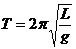
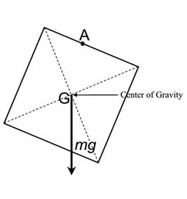
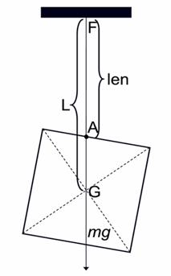

Problem D
Pendulum
Input: Standard Input
Output: Standard Output
Alex is trying to make a simple Pendulum. When a bob of mass m, is tied with a weight less string and allowed to oscillate freely (without any obstacle) then we get a simple pendulum. If the bob is like very thin steel plate and has the shape of a quadrilateral, it can be considered that all its weight (mg) is acting through the center of gravity (G) downwards as shown in Figure 1. Such a bob is tied with a string of length len at point A and other side of the string is tied with a fixed point F. Note that point A is always a point on the boundary of the bob. Now if the pendulum is at a steady position then F, A, G will be on the same vertical line. So now the effective length of the string (L) actually becomes FG instead of the original length of the string FA. Given the description of the bob, length of the string (len) and the period of the pendulum you will have to find out whether it is possible to make such a pendulum using the given string and bob. You can assume that string length wont be used up when it is tied with the bob. In case you don’t remember, the formula to find the period of a simple pendulum is:

Here L is the effective length and g is the acceleration due to gravitation. You can assume that g=981 cm/s2.
|
 |
 |
|
Figure 1: All force acting through the center of gravity downwards. |
Figure 2: At steady position FAG are collinear and perpendicular with the horizon. |
Input
The input file contains less than 1010 sets of input. The description of each line is given below:
Each set starts with a line
containing two floating point numbers len (1≤len≤1000),
T (0≤T≤10). Here len means the length of
the string (in cm) and T is the period of the pendulum (in sec). The next line
contains eight integers (0<=<10000). These integers actually denote the four corners
of a convex quadrilateral in clockwise or counter clockwise order and this
quadrilateral is actually the shape of the bob. The bob may be rotated when
hanged with a rope.
(0<=<10000). These integers actually denote the four corners
of a convex quadrilateral in clockwise or counter clockwise order and this
quadrilateral is actually the shape of the bob. The bob may be rotated when
hanged with a rope.
Input is terminated by a set where the value of len is negative. This set should not be processed.
Output
For each set of input produce one line of output. This line contains the serial of output followed by a “No” if it is not possible to make such a pendulum. If it is possible to make such a pendulum then print “Yes” followed by an integer d. d indicates the total number of feasible points on the boundary of the bob where string can be tied to make the desired pendulum. Look at the output for sample input for format details. To solve this problem consider that if the absolute difference of two values is less than 0.01 then they are actually the same value. And judge input will be such that distance between two feasible points will not be less than 0.01. In other words the value of d will always be even.
Sample Input Output for Sample
Input
22.000 1.0000 0 1 0 1 1 0 124.240 1.0000 0 1 0 1 1 0 1-24.200 1.0000 0 1 0 1 1 0 1 |
Pendulum
1: No Pendulum
2: Yes 8 |
Problemsetter: Shahriar Manzoor
Special Thanks: Derek
Kisman